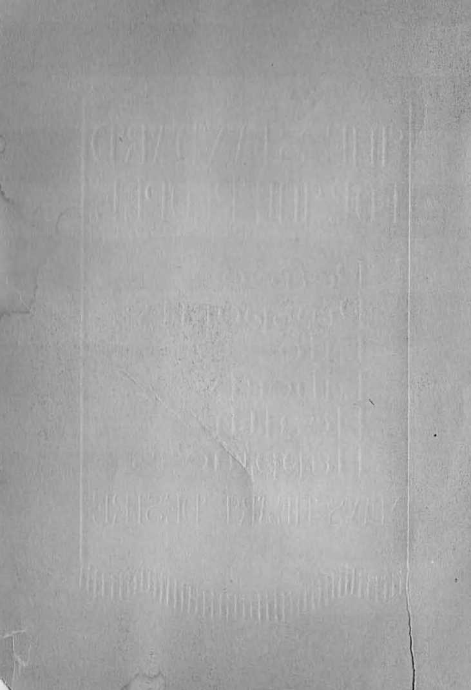
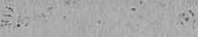
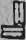
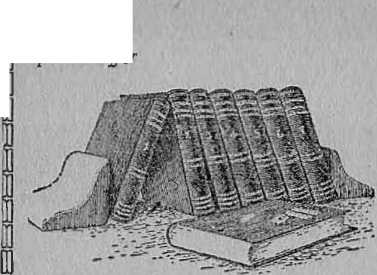
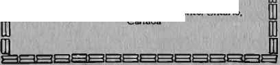

FORWEOM
Peace Prosperiity Life
■I liberty
II lealtn
rr n <>
Happmi' >
WS-HEfe LESIRE
■Il SWNDA'R'D
KftW PEOPLE
peace g prosperity!
liberty _Jj ypealtlhi.
A-AOAx.
0apPHn@^^; ^N’s HE<t DESIRE
"THE STANDARD FOR THE PEOPLE
A heart-cheering me.snge from the Bible for al people's of good will,
Writ len by
J', F, HUTRlRFOBD I'jwidl'll t of the
] oif'rmdiolllll Bible Students Associatiou
Also the author or
"Th_ JJaTp of Gael" "('oiii[of‘1 for tlte Jewf "J/illinus Now Living Will Never Die!" ".I DesireiiJI6 Government"
"World Distress—Why?"
"t'vmfnrl. [or lloe Peo1!.ia"
etO" . ute,
PRINTED IN U. S. A.
I'uijli’hed by
INTEnNATlONAI. Itt BLl:; STUDENTS ASSOOIATION-
DIIOOKJ.I'N, N. Y., U. S. A. •
Cllti,rlplA:J 1926
■I
MILLIONS of people on earth honestly and sincerely desire to rally to that standard which will guarantee to them security from harm and bring to them lasting blessings. They are greatly perplexed because not !mowing to which standard theYi should rally. My purpose is to direct the attention of the people to the divine standard. Knowing and following the truth will lead the people into freedom. ‘lam convinced that the time has come for the people to understand the truth.
There is a common enemy who has for centuriea blinded the people to the truth. The evidence at hand proves conclusively that the enemy shall soon be shorn of his power and shah not be permitted to further de-L'Ci ve mankind.
The great Oreatoi’ made of one blood al the peoples Ihat dwell upon the emih. The real interest of one is the interest of all. When the people come to !mow this and then learn to walk in the right way, there will be do more wars; and no longer will right be determined by might. The earth then will be a fit place upon which to live. 'I'he great God made the earth for 'man to dwell upon iu happiness. The "Une luust come when man will enjoy the full possession of these divine provisions. The fact that there is " way provided for man to receive that which he desires would do him no good, however, unless he knew about it. Foi’ this reason the first essential is knowledge.
All the peoples on earth may lie divided iiito two gen era l classes, to wit: the rulers and the ruled. The masses compose the latter class. Those composing the
8
ruling class ate properly divided into three parts, to wit: commercial, political, aud religious. The personnel of the ruling cluss changes from time to time by some of the J'uled being tmnsferred to the position of rulers. There is seldom a change. however, in the disposition of those who rule. When one is transferred from the l'lUed to the ruling ela,s it is easy for his disposition to undergo u change. Selfishness and self-interest is the real cause for this cliLnge. But this sdlishness is induced largely by the iuOtience of the common enemy hereinafter mentioned.
There iR frequently a clash between the rulers and. the ruled. Under right conditions this should not be so. Their interest should be mutual and identical. The :
masses of the people desire peace. prosperity, health, l iberty. life and happiness. For centuries man has actually eX1>erienced war, poverty. sickness., restraint, sorrow and death. During all Ihc centuries there has been a constant effort on the part of the people to overcome these difficulties to the end that they might have and enjoy their heart's desire.
A standard is that which marks a l'ailying place and directs the course of action the people should take. It sBr ves as a guide to lead the people in the way they may go. The mling class possess the desire to keep the people in subjection and under control. To accomplish the desired purpose there is held beioi’e the people certain standards or guides, and the people are called upon to rally to these; and it is TepTesented to them that by so doing their best interests will be conserved and that ultimately they will reRell their heart's desire. These standards bave been different at different times.
The standard of the commerciaL element bears this inscription: "Give ns greater wealth and power, and
■
we will! improve conditions and make the earth a fit place to live on. We provide all the great labor-saving dm"ces, the means of rapid transit, and means of education; and therefore we should guide the people."
The political element inscribes upon its standard this: "We possess superior qualifications for ruling. We organize and maintain governments. We enact and enforce wholesome laws. We safeguard the liberties and property and life of the people, and the people should follow our guidance and patriotically support us!'
The religious elemeut, for which the clergy act as spokesmen, upon its standard inscribes: "We interpret the divine will. Your life, liberty and eternal happiness depend npon your following the course that our standard points out. We will do your thinking for you concerning all spiritual matters. Hear nothing but. what is orthodox, because that is what we teach. Commit your souls unto oui’ keeping."
The "ily superlord of the evl world saw the advantage in uniting these three element? into one to compose the ruling class. In the name and under the guise of democracy the commercial, political and ecclesiastical elements join interests and hold up to the people their joint standard, which says: "The present systems of government are of divine ordering, and all the people should conform thereto. We must have greater Tevennes from taxes that we may prepare for war and thereby insure peace. We must centralize all power in the government to insure our strength against oui’ enemies. We must have an orthodox religion; and the commercial, political and ecclesiastical elements must stand together. The chui-ch must have within her portals the ultra-rich and the mighty politicians to lend power and diguity thereto, Al the people must patriotically support us iIj pence and in war. that we may maintain our present institutions aud safeguard the interests and welfare of the people. Our stuudai’il points the way to peace, pros-pierity, life, liberty aud happiness."
But the common people know from experience that these claims are not true. 'I'hey see tlio rich becoming daily more avaricious, heaping up for themselves greater riches, allil crushing out all oompetition thaV they inay •piu’sne their selfuh oourse without interruption. They see that intrigue, duplicity ami trickery are freely resorted to by the politicians. They Imow that the coii-ftict in doctrines of the various denominational systems cannot be in harmony with the truth. They are not jn ha=ony with each other nor with the well un der-stood rules of righteousness. They see that these ecclesiastical systems, and particularly their leaders, are marked by arrogance, self-sufficiency, impiety and tn-godliuess. The masses of mankind have lost faith in the standards held up to them by the rulers. They know that the claims made by these standards are false. and by experience have learned that these can never lead to lastmg peace, prosperity, health, strengtb, lib-roty, life and' happiness.
The Desire of All People
Among the people al'e loany mnen and women of good will possessing an honest and sincere desire not only to see their own condition improved, but to see the people generally receimg benefits. Some of these are philanthropists who spend m uoh money to build libraries llnd stock them with books that are never read, even though they are readable. They lift up a standard of higher’ education and invite the poople to mily to .that and say: "l'l Fil save iou,"-
Others of like honest intent organize cooperative societies to carry on their work, holding up before the people a standard that claims that cooperation one with another will bring the desired relief; and they caU upon the people to rally to that standard. Few respond. Results are negligible.
Others of equal integrity and good intent organize societies advancing a land finance scheme and singletax proposition desiring to measure the value of all things by service or labor rendered; and these hold forth a standard for the people to follow, and earnestly yet vaiuly call upon them to follow.
Only a few think seriously of these various standar ds. All realize that the entire social, fifinancial, political and ecclesiastical system or systems have completely railed to bring satisfaction to the ]leople. Doubt and fear have taken hold upon all mankind. They are in perplexity aud distres". They see threatening another weat war far more tenible and destructive than any war cvcr known. Desiring peace and hating war, they are compelled to contribute their money to prepare the most devilish and deadly instilments of deslTuction. They continue to stiffer under the oppressive weight of wicked profiteers, high ta"es, faithless politicians, and raise religious leaders. If theBe standards lifted up have, at some time in the past, given hope to some then the hopes of these nre now dnshed to the earth. The peoples and nations of the earth have reached their extremity. They nre not ouly ready for but desire a change for something better. It is God's opportunity. .
The due time has come.
Fake and True
There must be a reason why aU the schemes of men have failed. If any of these various schemes or standards had tCe approval of the all-wise, just and al-powerful and loving God surely suoh would have auc-ceeUcd hi bringing relief to the people. Why have the standards held forth by the conmierciaJ, the political and religious Leaders, separately or combined, failed? The answer is: Because all have been contrary to the plan of Jehovah. The authors of these schomes of‘ standards have had their mind turned away from the true God, and the enemy has led them away iuto paths of dark-uess. Al these standards, which have been held up before the people, h)lve iguoi’ed God's way. They are the result of imperfect human reasoning ",\d a complete failure to tnke into consideration the plain instructions given in the Word of God.
Cal to mind the £act that only one people were ever organized into a government by Jehovah, which people was Israel. That government was not an arbitrary one; but God made with that people a covenant or contract for the purpose of enabling them to prove to themselves that man cannot realize his heart's sincere desire without the aid of the great Jehovah God. The Israelites failed. Why did they fail? Because they forgot God aud violated their own covenant and were led away by the great enemy. The first commandment given to them was: "Thou shalt have no other God before me."’ That commandment was given for the sale benefit of the Israelites. Jehovah God was their true and only friend and for this reason he commanded them to obey him. They turned to other gods and lost aU. This of itself should prove ^that no people can succeed or
realize an honest an" sincere desire unless they follow God's appointed way. The standard of God is the only one for the people. But who is God?
The True God
The English word "god" translates the Hebrew word 'Elohim, which means mighty one. It is sometimes applied to magistrates or mighty nUers, and it is also applied to the Supreme Being. The great Eternal One, the Creator of heaven and earth, has diferent names.
When Moses was sent by the Lord to deliver the Israelites from Egypt Moses inquu:ed what he should eay to them: "And God said unto Moses, I AM THAT I AM: and he said, Thus shalt thou say unto the children of Israel, I Alii hath sent me unto you!' (Exodus 3 : 14) Not that he was or will be, but that he is now, ever was, and ever will be, without beginning and without ending, from everlasting to everlasting.—Pea. 90: 2.
liWhen God made a covenant with Abraham he appeared unto Abraham under the name of Almighty God (Genesis 17: 1), meaning thereby that in him resides all power, that he is omnipo tent and irresistible. His will is his law. He but wills a thing, and his power carries it into action. When Abraham was ministered unto by the great priest, Melchizedek, God was then made known to him under the name of "the most high. God". This conveys the thought that be is the great Creator of heaven and earth, an" indicates his relar tionship to the entire divine program. V® the one
above all and besides whom there is none other.—Isaiah •
42 : 5; 40: 12,23.
When Pharaoh, the mighty nUer of Egypt, refused to let the Israelites leave that land at Moses' request, God spoke unto Moses and said: "'And I appeared unto abraham, unto Isaac, and unto Jacob, by the name of God Almighty; but by my name JEHOVAH was I not known to them." (Exodus 6: 3) This is the first time he appeared under the name Jehovah, which signifies Seli-eristing One, Eternal One and the One Eternal, whose name aloue is Jehovah iind who is higher thau al and above, al. (Poahis 83: 18) "Who only hath immortality, dwelling in the light which no man can approach unto; whom no man hath oeen, nor can see: to whom be honor and power everlasting."—l Timothy 6: 16.
Jehovah, the ^hisghty God, is the Creator of heaven and earth. (Isaiah 42: 5) The Bible is his Word of Truth, written at his dictation and written by holy mea as theirr minds were moved upon and directed by the power of the Almighty God. (2 Peter 1: 21; 2 Samuel 23: 2; 2 Timothy 3: 16) Ris Word is a statement of the hutl!. (JoM 17: 17) [For a more complete discussion of this subject se the H^I' of God, pages 15-20.]
The earth is a wonderful planet. The diversified creation that appears ujon it bespeaks the wisdom and ^^er of the great Creator. It is the place whero man has had his experiences. '.the ^mighty God cr^ed it. Why did he create it? His Wotd answers: ''1 bave made the eaearth, and created man uJlon it: I, oven my hands, have stretched out the heavens, and aU their hob! have I commanded.... For thus aaith the Lord that qeated the heavens: God himself that fonned the and made H, he hath established jt, he created it not in vajn, he formed it to be inhabited; I am the Lord, and the re is none else." (Isaiah 45: 12.18) "One generation passeth away, and another generation cometh; but the abideth for ever."—Ecclesiostes 1: 4.
Man Created
Man did not CODie into e:astence by his o\\11 efforts; nor is he the result of the process of evolution. as some Belf-constituted wise men think. Seeing ihat the Loi’d has declared that he created the earth for man to Jive upon, then it is reasonable that God would create man. to live thereon. The record of his creation is plainly stated in the Scriptu‘es:."The. Lori! God formed Ulan ■ of the dust of the ground, and breathed into bis nostrils the breath of lives; and man became a living soul. And the Lord God planted a garden eastward in Eden; and there he put the man whom he had fotman.....
And the Lord God took the man, and put him iuto the garden of Eden to dress it and to keep it. And the Lord God commanded the man, saying, Of every tree of the garden thou mayest freely eat: but of the tree of the howledge or good and evil, thou sbalt not eat of it: lor in the day that thou eatest thereof thou shalt smely die."—Genesis 2: 7, 8, 15-17. ,
God made woman as a helpmate and companion fm;c," mail. (Genesis 2: 18) "So God created man in his oif,lk1:.<¥ image. ill the image of God created he bim; male al1l1.d' female treated he them. And God blessed them, and •, , Goel "aid unto them, Be fruitful, and multiply, and . replen i.h the earth, and suUd ue it; and have dominion^. over the fish of the sea, and over the fowl or the qjI. r and ovo" every living thing that moveth upon :the earth.”—Genesis 1: 2:7, 28.
These great fundamental truths. thus stated by Je- . liovah Goel. prove beyond a doubt that be iutemledrnan 10 live 011 earth for ever. Eut before he would grant to man the privilege of everlasting life, he .put mall.to a test to see whether or nor mall posBesseU the stamina
U
to resist evil and follow good. He placed man and woman in Eden, a perfectly Oeautiful place, containing the food necessal'Y fol' their sustenance and pleasure. Here the two were dwelling together in peace, prosperity, health, strength, life, liberty and happiness.
The False God
Lucifer was a creature of great beauty and power. God placed him in Bden as overseer or overlord of man. "Thou art the anointed cherub that covereth; and I have set thee so . ... Thou hast been in Eden the garden of, God.” (Ezekiel 28: 14, 13) Furthermore the Lord says concerning Lucifer: "Thou wast perfect in thy ways from the day that thou wast created, till iniquity was found in thee," (Ezekiel 28: 15) While man was pei'fect in his organism his e>q)ei'ience, or course, was limited, He must meet an e"perience that would determine whether of‘ not he would be obedient to the law of God, To disobey that law would be evil. To obey would be righteous, It was the solemn a;id sacred duty of Lucifer to safeguard the intereBts of man and instinct him to be obedient to the great Eternal God-Lucifer occupied a fiiducilly relationship toward God and toward man, and was duty-bound to be loyal and true to Jehovah. But iniquity was found in ^in and he fell.
Han was created with a dei!P-‘e to worship his superior. Of course he would worship Jehovah God, because he knew that God was his Creator and Benefactor, Lucifer became ambitious to have the worship of 'man which Jehovah would naturally receive. Lucifer saw that the perfect man was endowed with power to produce a race of people. He had a vision of a future day when the earth would be filled with great multitudes of ]eopie who must worship some one. He had an ambitious desire to have that worship. He 8et about to obtain it. In order to carry out his scheme he was willing to become, and did become, a traitor to God. He Imew the law of God provided death as a penalty for its violation. God made this law to test man before he would grant to man everlasting existence. To Lucifer had been granted the power of death. (Hebrews 2: 14) By that it is to be understood that it would become his duty to put man to death for a violation of God's law. Knowing this, Lucifer reasoned that he would induce man to violate God's law and would then refuse to put him to death, and thereby prove to man that God's law was merely a threat and that God was giving him this law to keep him in ignorance and to deprive him of the privileges to which he was justly entitled.
Lucifer reasoned that he would thus be enabled to induce man to believe that God is a. liar and had lied to him when he said: "In the day that thou eatest thereof thou shalt surely die." Lucifer further reasoned that he then would appear in the eyes of man as his friend and benefactor and entitled to his worship and that he would thus alienate man's affection from God and that he, Lucifer, would have it himself. Thus was iniquity fouud in him.
The prophet records in the Bible conceming Lucifer: "How art thoii fallen from heaven, 0 Lucifer, son of the morning! how art thou cut down to the ground, which didst weaken the nations! For thou hast said in thine heart, I will ascend into heaven, I will exalt my throne above the stars of God: I will sit also upon the mount of of the congregation, in the sides of the north: I will ascend above the heights of the clouds: I will be like the most High."’—Isaiah 14: 12-14.
Lucifer carried into action his nefarious scbeme. To do this he employed the services of the serpent, a vis-iDle animal iu Hdcn, and in his wily, fraudulent and deceptive way approached the woman Eve and said: "Yea,'hath Ood said, Ye shall not eat of every tree of the garden? And the woman said uuto the serpent, We may eat of the fruit of the trees of the garden: but of the fruit of tile tree which is iu the midst of the garden, Gad hath said, Ye shall not eat of it, neither shall ye touch it, lest yo die." To tbis Lucifer replied: "Ye sball not surely die: for God doth know thatiu tho day ye eat thereof, •then your eyes shall be opened; and ye shall be as gods, knowing good and evil." (Genesis 3: 1-5) The woman partook of the fruit in violation of thc law. Her husband Adam joined ber ill thc lransgression. (1 Timothy 2: 14) Thus the mighty one Lucifer, the false god, deceived and misled the woman and caused both the man and the woman to violate God's law.
The G^t ^Los
In keeping with his righteous law God sentenced man to death for his disobedience. By this judgmeut man was deprived of the right to live, and God caused him to gradually suffer the penalty, und at the end of a certain period he was dead. Therefore Adam's life and right to live were gone. Al the children begotten by Adam were born between the time this j udgment was entered and the time of its complete enforcement. It was the imperfect Adam who became the father of the linman family, and for this rereason all the rl\ce has been born imperfect and without the right to life. This is "ery reasonable and is the Scriptural conclusion. (Psalm 51 : 5; Romans 5 : 12) From then till now mankind has been iu sorrow and snjIeriug, and Ihas been
vainly seeking pMce, prosperity, life,'Hberty and happiness. These things man lost by a violation of God's law.
Because of the wickedness of Lucifer God changed his name; ami from that tme forward he has been' blown as the Dragon, Satan, Serpent, the Devil. Al of these Dames have much significance. Lucifer means lightbearer. He was a creature of great beauty and the' bearer of right. (Etekiel 28: 17) Satan means adversary or opposer; and from the time of Eden till now Satan has opposed everything that is righteous. Dragon ' means devourer; and during all that period of time he has sought to destroy everyone who hied to be righteous. Sci’pent means deceiver; and from the time of Eden UIltil this day the evil one has tried to deceive mankind and to turn the mind of man away from the true and righteous God. Devil means slanderer; aad throughout all the centuries the Devil has slandered God and caused his croisEaries, posing as God's representatives, to slander him, and he ,and they have slandered all who have honestly tried to serve God. This explains why so much evil has been spoken a nnl those who have humbly hied to serve and reprssehfc.. the Lord.
Understanding these facts we can see why Jehovah is called the only true God and why the Devil is the false or unrighteous god. The hue and righteous Go<l could have destroyed Satan the Devil at any time, buiit'" that was;not his plan. He granteil Satan the’supervJ-sion over man ill the beginning to test Adam. He, did not take that supervision away when he sentenced Adam to death. It was God's purpose that all the human family should have an experience with the b\neful effects a! evil, and he has permitted in that he has not hindered Satan from pursuing his wicked course, and this 'has served as a test to mankind,
World, as used in the Scriptures, means an organization of the people into forms of government under the supervision of an overlord. The nation of Israel was the only people with whom God made n covenant, and who were organised nto a government;and JehovahGod was therefore their Qverlord. All other nations have been under the influence of the false god or the Devil. In due time Israel fell under the wicked influence of Satan the Devil, and then Satan became the invisible ruler or god of the entire world. lie has used all manner of schemes to keep the people under his influence and to turn their minds away from the true and loving God and to blind them to the truth of God's plan for their salvation and blessing. Concerning Ihis it is written: "But i1 our gospel be hid, it is hid to them that arc lost: In whom the god of th's world hath blinded the minds of them which believe not, )cst the light of the glorious gospel of Christ, who is the image of God. should shine unto them."—2 Corinthians 1: 3, ‘1.
Why World Standards Wrong
The standards lifted up before (he people by the com-mer ci al, political, and ecclesiastical elements have been and ai’o wrong; because Satan the Devil has overreached this niling class, corrupted their standards, and caused them to ignore therein the ttue and loving God and to utterly disregarded his pl an. These standards, may be truly and properly called the standards of Satan the deceiver Leeause they are deceptive and bring not what tLey drum to bring. ’
Israel fell because that nation ignored the true and liviug Gud. We have today what is called Christendom, meaning those nations of the earth that claim to be CLridian but in fact axe not. Instead of being Christian the dominating or governing factors are under the supervision of the god of this world. They have fallen because while claiming to follow the Lord God they have yielded to the influences of the false god Satan, have ignored the truth, and followed in the way of unrighteousness. Their plan or scheme put forth by men with the avowed purpose of benefiting the human race has minimized the importance of Jehovah. Gov-ermnents and organizations manifest that they are ashamed of the name of Jehovah God. If his name is mentioned it is in a half-apologetic way. Neither the commercial nor the political nor ecclesiastical elements are willing to take an unequivocal stand for God and for his Word of Truth. At the present time the majority of the clerg)'I1len who claim to be the religious directors of the people deny God, and deny his Word, and substitute theu own wisdom therefor.
Satan has not the power to give life to the human race. He never possessed suob a power. Doubtless if he had possessed that power, he would have given the race eternal life and kept them under his control, that his dominion might continue for ever. Jehovah God is the on!y source of life. (John 17: 3) He created man and gave him life. God took away that life and right thereto because of a violation of his law. He alone can give man life. Then why waste time with other schemes? Why look to other standards? Why listen to the philosophy of world-wise men? Their wisdom is foolishness in the sight of God. It is foolishness to every one who understands and loves God.—1 Cor. 1: 20.
.... H Goil took away man's right to live because man had violated God's just law, then how could God thereafter grant life to man and he consistent? This is " pertinent question which has puzzled many men, and ibe Devil has succeeded in uring the preachers to blind most men to the true answer,
God could not consistently reverse his judgment nor But it aside and let man go free. Justice and judgment m’e the habitation of Jchovali’. throne. (l'sg. 89: 14) G od having declared his judgment against Adam, Adam must die. Goil could, however, consistently make a provision that another perfect man equal to Adam could voluntarily go into death ill Adam's plnce and .iead and Adam thereby be released. Adam alone was sentenced to death because he alone wa$ on hint. Al of Adam's childi*en, now composing the entire human family, were born without a right to live because born imperfect. For this reason it ;s stated: "In Adam aU il ie."?— 1 Corinthians 15: 22.
It was the pIau of Jeho"ah Goil that redemption £or Adam anti his ofl'sj)ring be provided to the intent that all mankind shall have one fair ojjportuuity for liie, When this opportunity is givon, then everyone who arails himself thereof aud obeys God's righteous lull' shall be granted life everlasting in a state of happiness. God promised that he would redeem mau from death and purchase him from the power of the grave, (Hosea 13: 14) His law provided that this cOuJd be done by a perfect life being given for a perfect lifo. (Bxodus 21:23) In all the earth there was no one who could meet this requirement of the law, because all were the offspring of Adam. (Psalm 49: 7) But the power of the Almighty God was 11ot limited. In heaven was the • Logos, the beginning of God's creation, always in harts
mony with Jehovah and ahm)'s obedient to his wil. —John 1:14. ., .'
In God's due time the Logos was transferred frdm heaven to earth. 'He was made flesh and dwelt amongst men.' (John 1: 14) When he stooO upou this earth at the age of thirty years he was periect in his organism, perfect in every manner. God jlroposed that he sliould be granted the greatest plnce in the universe, next to Jehovah himself, if he mGt the test now that was before him. And what was that test? FuU aitd complete obedience uiito the Inw or God under the most adverse circumstances.—Hebrews lJ: 8, 9.
Why had hc come to earth and why was he made a man? The scripture answers: To give his life a ransom, the jiw’chase price for mail. (Matthew 20 : 28) He came that the people might ha"e life and ha"e it more abundantly. (John 10: 10) '1'o accomplish the, purpose it was necessary foi’ the pedect man Jesus t" voluntarily die ns a sinner; that is to ,ay, in the place of the sinner in order that he migllt take tle place of the sinner who was in death. Concerning this, Jesus .aid: ''Therefore doth my Father love me, because .1 lay down my life, that I might take it again. No man taketh it from me, but I lay it down of mvself. I have power to lay it down, and. I have power to take it again. Til commandment have I received of my Father!' -John 10: 17,18.
Jesus had the right to lh-e as a man! W1iGn he died voluntarily, he Eimendered his life as’n man that the human race might benefit therefrom. "For God so loved the world. that he gave his only begotten Son. that whosoever believeth in him should not perish, but have everlasting life. For God sent not his Son into the worM to condemn the wgi'W; but that the world through him might be saved,"1—Johu 3: 16, 11,
Jesus met the test under the most adverse circumstances : "He humbled himself, and became obedient unto death, even the death o1 the cross, Wherefore God also hath highly exalted him, and given him a name which is above every name: that at the name of Jesus every knee shoidd bow, of things in heaven, and things in earth, and things under the earth; and that every tongue should confess that Jesus Ohi’ist is Lord, to the glory of God the Fatherlif—Philippians 2: 8-11,
For whom did Jesus die? And the apostle answers: He tasted death "for every man", (Hebrew" 2: 9)' He gave his life "a ransom for all, to be testifiedin due time",—l Timothy 2 : 6,
He arose from the dead the di "hie Christ Jesus and ascended into heaven. He presented the great mnsom price in heaven itself,—Hebrews 9:21.
])o not the clergy teach that Je"us is i he Hedeemer of man, and is not that a part of Ih"i" stanUnnl that they hold up to the people ? Some or them touch that he died for man, while some of them deny Ihis entirely, but all of them nullify the great tl'ltb of the ransom by many other erroneous doctrines ii’liioh . they have included in their standard and which serve a. stumbling stones over which the people have stumbled. There is a great conflict between Catholics and Protestants, No one can harmonize their teachings with each other or with th^^elves. There is such a jargon and confusion amongst the various denominations and such a misrepresentation of the divine program that none can understand the philosophy thereof. These stumbling stones have been put there by the enemy Satan the Devil to blind the mminds of the people and tnl'l them away from God-
The Lord speaking to mankind says: "Oome noiv, and let us reason together, saith the Lord: though your sins be as scarlet, they shall be as white as snow; though they be red like crimson, they shall be as wool!' (Isruah 1:18) We must therefore know that God's plan is reasonable, but that anything that is unreasonable cannot be in harmony with his plan.
One of the great stumbling stones, one which is maintained by the clergy, is that al men have immortal souls and that there is in fact no death. Seusible men have reasoned: If a man's soul is immortal and he cannot die, then how could the death of Jesus constitute a ransom price? How could Jesus be the Redeemer of an immortal soul; that is to say, a sou) not subject to death? Thereby the clergy nullify the ransom price.
The immoilality of the soul is the first lie that the Devil ever told. Jesus says so. God had said: Man shall die. The Devil said: "Ye shall not surely die!' The clergy say the same thing. Jesus said that the Devil is n liai*. (John 8: 44) In what clas^ do the clergy put themsel ves?
The scripture reads that Got! formed man of the dust of the gro und and breathed into his nostrils the breath of lives, and man became a living soul. «(knesis 2: 7) Mau is the soul. He does not possess a soul. Man dies. A soul dies.
A ilistinguished clergyman in the city of Ne\\" York a short time ago over the radio said: "I would like to know of some scripture that says that the soul dies!' This is proof of the ignorance of the clergy. The scripture reads: “The soul that sinneth it shall die!'’— Ezekiel 18; 4; Psalm 89 : 48.
21
. The clergy teaeb in their standards that when a man dies he merely has a change; and that if he is good he goes to aiie place and _ if bad to another. They say that some are in purgatory, where they may be prayed out ior a consideration) while others fire in hell, which is represented to be a place of consoious torment, eternal in duration. The reasonable mind says, If the dead are in eternal torment they can never come out, because if they could come aiit that would prove that they ai’e not there eternally; and if the dead are there conscious and being tormented, how could the redemptive price of Jesus do them any good? This stumbling stone also nullifies the ransom.
‘‘‘the living Imow that they shall elie: but the dead koow not anything, neither have they ony more a reward ; for the memoiY of them is forgotten . .,. Whatsoever thy hand lindeth to do, do it with thy might; for there is no work, nor device. nor knowledge. nor wisdom. in the grave, whither thou j!oest." (Ecclesiastes 9:5. 10) "The deod praise not the Lord. neither any tliat go down into silence."—Psalm 115: 17.
Hell, as used in the Bible, meuns grave, the tomb, and not a place of conscious torment. Eternal torment is another stmnbling stone wliich was placed by the Devil, and which has held before the people the thought that God is a fiend who will torture creatures for ever without any reason. This. has had tl tendency to turn the Jiiinds of the people away from the just and true God. ‘
The clergy also teach the doctrine of the trinity ; that is to say, God the Father, God the Son, and God the Holy Ghost, one in person, equal in power. 'l'he reasonable mind says: If the Lord Jesus was god himself, how could a God be accepted as a ransom or exact cor-'e"poneiing price for a man? Again the unholy doc-
trine nullifies the plan of redemption. This has b.eh another stumbling stone that has turned reasonable people away from the Scriptures. •i
Jehovah is the only true God, besides whom there is none; and his glory he will divide with no other. (Isaiah 42: 5, 8) The Lord Jesus is the Son. of the living Ood. He said: "My Father is greater than 1." (John 14: 28) And again he said: "I seek not mine own will, but the will of the Father which hath sent me." (John 5: 30) He prayed to God on the night before his crucifixion. (John 17: 1) Wonld any reasonable person think that he was practising a fraud on others by praying to himself? The term holy ghost is not a proper translation in the Bible. The word translated "ghost" should be translated spirit. The holy spirit menus the invisible power of God. The doctrine of the trinity is another false doctrine that belongs to the standard of this evil world.
A[any of the modern clergy teach and indude in ilieir standard the doctrine of evolution; that is to say, that iDan emanated from protoplasm and is n creature of evolution. This of course deuies the 'creation of man, denies his need of a redeemer, and denies tho value 6f the redemptive price.
'fhe clergy teach that the kingdoms of this world, of which they are a part, constitute the kingdom of God, aUll that these kingdoms are operating by divine right; anU they call upon the people to support them. This is another stumbling stone. Jesus dcclai’oo: "My kingdom is not of this world"; and he taught the people to prepare for the coming of his kingdom. He promised to return and set up his kingdom,
Even though all concede that Jesus died as the Redeemer of man, and that he arose form the dead, the question remains: How is man to benefit thereby? The answer of the clergy, which they make a part of their standard, is that if a mail believes that Jesus Christ is the Son of God, and then joins their church and follows their teachings, wl1en he dies he ean be saved.
Tn. Oatholics say that if a man is fairly good lie will go to purgatory, where he remains for an iiidetinite time and is prayed out, and then he may go to heaven. The Protestants say th at if he is a good member of their church until he dies, he will go straight to heaven. Both Oatholics and Protestants say that if the man is bad, and does not belong to the church at all, he must go to eternal torment.
But wlmt about the millions of heathen who never heard of the Catholic church or the Protestant church? What about the millions who died before either of these systems was ever organized? Furthermore, the reasonable mind asks: Oatholic and Protestant systems, hi their standards, clam that all men who are saved at all ate saved in heaveji and that aU the others go to hell. What abo lit the eaxth? The plain statement of God'a Word is that God made the earth to be inhabited by man. Is it the intention of Gail that the earth is to be for ever merely a breeding .place for the human !‘ace, a place of temporary abode; auil that then they must pass on to some other realm?
Only the Scriptures can give a satisfactory answer to these questions. The people are thoroughly familial' with, and completely disgusted with, the inconsisteJlt statements that the clergy have inserted hi their standards in aIlEwer to these qnestions. 'the basic promise for the redemption and recovery of the men and nations 24
of the earth is that which God made to Abraham, in which he said: "In thee shill ill the families of the earth be bleEsed." (Genesis 12: 3) Later God said: "In thy Eeed shall all the nations of the earih be blessed." (Genesis 22: 18-22) This divine promise being true, and it is tnte, it follows that the "seed", being the medium of blessing, must first be developed and manifested before the blessiug of the people could come. What is the " seed according to the promise" ? The Scriptures answer: "Now to Abraham and his seed were the promises made. He saith not, And to seeds, as W many; but as of one, And to thy seed, which is Christ."--':‘Galatians 3: 16.
Christ Jesus is the Head of the Christ, the church being the body. (Colossians 1: 18) Every true and faithful one baptized iuto Christ becomes a part of this "seed according to the promise".—Galatians 3: 27,29.
The word "chnrch" means called-out class. It does not mean the Catholic system nor the Protestant system nor any other system of Teligion. It has reference to the body of Christ, made up of men and women who have unreservedly consecrated themselves to do God's will and who continue to do so even unto death. These are called to follow iu the footsteps of Jesus, their Head and Redeemer. (1 Peter 2: 21) Jesus did not ally himself with the preachers and politicians of this world, nor with the clergy who claimed to represent the Lord but who iu truth and iu fact represented. the Devil. The true followers of Jesus eannot now have a part with such an unholy alliance.
The clergy of our time say that we must be a part of the world, that we must have the preachers and politicians iu oiu‘ churches, and that we must participate iu politics and advocate war in tinie of "‘ai‘ and to help run the affairs of this world. The Lord's Word says to them: "Ye adulterers and adulteresses, know yo not that the friendship of the world is enm;ty with God? Whosoever therefore will be a friend of the world is the enemy of God." (James 4: 4) They are called adulterers, not because tI;ey are unchaste with tire opposite sex, but because there is ail illicit relationship between those who profess to be followers of Ohrist and those who are the avowed representatives of the Devil, the false god.
’ 1'he time Christian who will be n jar! of the seed according to the promise is the one who faithfully represents the Lord and stands for him. To these certain specific promises are made, amongst which is the fol- . lowing: "Be thou faithful unto death, und I will give thee a crown of life." (Revelation 2: 10) That does not say to be faithful unto war or some other wicked scheme, but it says to be faithful unto the Lord to the end. The reward is giveu to such in the resurrection; became, say the Scriptmes, "they shull be prieo-ts of God and of Ohrist, and shall reign with him a thousand years!' (Revelation 20: 6) These, together with their Head, Ohrist Jesus, constitute the loyal family or king-dam class. To such Jesus said: "It is your Father's good pleasure to give you the kingdom." (Luke 12: 32) 'fa such the Lord Eays: "To him that overcometh will I grant to sit with me in my th rone, even as 1 also overcame, and am set down with my Father in his throne!'—Rei’elntion 3: 21.
It is this true and faithful class constituting the seed of Abraham that participate in the first resurrection and find their eternal abiding place in heaven. It is only a small nutnber.—Luke 12: 32.
But what is to become of all other peoples of earth, I the heathen and the ignorant and the mass of those
who bave been turned away tram God because of the ' misrepresentation made by the false standards ?
God has appointed a day 01' time in whieh all of these shall have ail oppo i'tunity foi' life; because, say’ the apostle, "this is good and accejitable in the sight of God our Saviour; who will have all men to be saveU, and to come tiiito the [accurate] knowledge of the truth." (1 Timothy 2:3, 4) The death of Jesus 1'1'0-vided the salvation, and now each one must be brought to a knowledge of the truth. The day of this judgment is the Millennial reign of Clii’ist, iii which all shall hit". im opportunity to live. (Acts H: 31) What shall be the reward or blessing of those who obey and who receive a favorable judgment? The answer is: Restoration to that condition of human perfection which Adam had ill Eden before he violated Goil's law and lost it all. A,1l the prophets from Samuel to Malachi have testified concerning this period of restoration of the human family. (Acts 3: 24) Restoration means to resto)'" that which was lost. Adam, as we have seen, enjoyed peace, prosperity, health, life, liberty and happiness. All of these he lost; all of these Jesus bought; all of these the Lord Jesus Christ will restore to the >obedient ones. "" ' '•
It is conceded by al reasonable people that the tions and peoples of the earth are in an unsatisfactory .. condition. Even the ruling classes are uneasy, in perplexity and distress. All have a longing for a change to a better eOndition. It must be conceded, lifter "ll, of these centuries of effort, that n\ai\ cannot aecoiiiplis'b ' these things for himself. Man has not been able to build a satisfactory government. Who theu has the power and who can do it ? The answer is: Jehovah dod. He gave life to man, he took life away, and be has made provision ior the redemption of man and restoration to liie. These blessings he will grant to man by and through the kingdom of lus beloved Son, Christ Jesus.
Does that mean that in the outworking of the divine plan God will give life everlasting to all men regardless of whether they want it or not? God never forces bis favors an any one. It is written: "( ... For if byone man's o(lencc death reigned by one; mnch more they which receive abundance of grace, aud of the gift of ■ righteousness, shall reign in liie by one, Jesus Christ.) Therefore, as by the offence of one j lulgment came upon all men to condemnation; evell so by the righteousness of one the free gift came upon all men unto justification of life. For as by one man's disobedience many were made sinners, so by the obedience of one shall many be made righteous."—Romans 5: 17-19.
“For the wages of sin is death; but the gift of God is eternal life, through Jesus Christ am’ Lord." (Romans 6 : 23) the apostle here answers the question. He emphasizes the fact that liie is a gift from God. A gift is the result of a conhact. There must be a giver and a receiver. The oBe must be willing to give; the j other must be willing to receive. There must be a meet-
i ing of the minds. It is impossible to give to a man who
refuses to receive the gift. Likewise it is impossible to give to one who knows nothing about the offer. These scriptme definitely settle the fact that the Lord Jehovah will offer life everlasting to mankind through Jesus Christ and that .11 those who accept the offer on the terms made, and render obedience, shall receive it. |» The first thing essential to a gift is knowledge. Mter
il the complete establishment of the kingdom of God the
people must be brought to a knowledge of the truth before their responsibility to accept or reject the truUi arises. It will not do to say that men throughout the age have had an opportunity to receive the truth when the truth has not been told to them. False doctrines promulgated in the name of the Lord do not constitute the truth, nor do such doctrines place responsibility upon men. The apostle in 1 Timothy 2: 3, 4, says : "God, . . . who will have al men to be saved, and to come unto the [accurate 1 knowledge of the truth." The cleath of Jesus Christ provides the salvation, and knowledge is now the next st^.
Why should knowledge be given and a knowledge of what? The apostle answers: "For there is one Cod, and one mediator between God and men, the man Christ Jesus; who gave himself a ransom for all, to be testified in due time." (1 Timothy 2: 5, G) His argument here is that there is one Jehovah God, the clergy teaching that there ai’e tinee. He says there is one Lord and Sa viol' Jesus Cln’ist, who gave his life a ransom for all; and that this fact must be testifed in God's due time to all, that al may have the opportunity to either accept or reject the offer.
Why have not the people been receiving the truth throughout the entire Gospel Age? For two separate and distinct reasons: (1) Because the Devil has blinded their minds lest the truth should shine unto them and they would •believe (2 Corinthians 4: 3, 4)'; and (2) because it was not God's due time to let the truth generally be known. God does everything timely and in order. . ■ ,
The clergy have been telling us for a long time that Cod has been trying to comeit tho world, tnd that their business is to comeit the world and bring people into the church. This is also an erroneous statement. God does not try to do anything. He does things, according to his will. SuTely we should atttribute to the great Jehovah more wisdom and ability than to believe for a moment that he would commit to imperfect men the trememdous job of coDverting the world and bringing them to him. Why then have men been trying to preach the gospel ? Jehovah has had the gospel preached that those who had tho ear to hear might hear, that he might take out from the world a people for .his name, to Vi'it: those who would be the followers of Christ Jesus and who would prove faithful and be associated with him in his kingdom.—Acts 15 : 14-17.
God has not forced any one to accept his message of truth. On the other hand the Scriptures declare: "Who hath ears to hear, let him hear'." (Matthew 13: 9,43) Comparatively few have desired to hear ; and these have had to war against the influence of the adversary and to walk in the light of the truth. The faithful Christians who thus continue faithful unto death, und who participate in the frst resurrection, are thereby cbanged from hwuan to spirit beings. They nre made members of the royal family of heaven. They constitute, together with Christ Jesus, the "seed of promise", according to the promise which God made to Abraham. (Oalatiana 3: 16,27,29) It is written: "Nevertheless we, according to his promise, look tor new heavens and a new e""th, wherein dwelleth righteousneBs."—2 Peter 3: 13.
What is this new heavens and new emth here spoken of? It is the kingdom of God mentioned in symbolic phrase; heavens referring to the invisible part, and earth referring to the visible pait of God's kingdom.
What will be God's method, according to his Word, of bringing the knowledge of the truth to the people in order that they may accept or reject it as a gift? The Scriptures answer that by the esfablishment of his kingdom of righteousness, to wit, the new heavens and new earth above mentioned—that by and through this he will bring a knowledge of the truth to m^^rnd in general.
The clergy have taught that the present kingdoms of constitute the kingdom of God; and they join
in a proclamation stating that the League of 1"ation,s is the political expression of God's kingdom. Is that true or not? It is not only untrue, but grossly false. 'the League of beiikin; is what is designated in the scriphires as tl", “Image of the Beast" (Revelation 13: 14, 15), which is another product of the Devil by which he attempts to rule the nations and peoples of the earth and keel) them in subjection to himself, and to tiiin away their minds from .the true and living God and from his kingdom.
When Jesus stood before Pilate he declared: "My kingdom is not of tbis world." (John 18: 36) By this he meant to be understood as saying, Sataii the Devi.l is the god of this present world. He is the invisible ruler and he is evil. He r,;les in the earth by his visible representatives and tliey are evil. Jesus taugbt his discipIl!s to;pray to God and to say: “Thy kingdom come. Thy will be done in earth as in heaven." (Matt. 6: 10) 'rhis of itself shows that his kingdom is not of the evil woi’ld nor during the time of the evil worllt In fact, the kingdom of righteousness and the kingdom., of unrighteousness could nob'exist at aiie and the sallle time and both be in control of the people of the earth. o
Wlien Jesus was on earth, the burden of his message \vas concerning the kingdom. Just before his crucifixion he told his ilisciples that he was going away and would prepare a place for them anil that he would come agafu anU receive them uiito himself. (John 14: 2,3) Al the prophets had taught collceming the coming of God's kingdom. Tire Jews looked forward to that time. The disciples .f Jesus understood that the evil world must emU before his kingdom would be put into operation. For this reason they asked him the question: "Tell u‘, when .hall these things be? and what shall be the sign of Ihy presence, and of the end of the world ?"—Matthew 24: 3.
The answer of Jesus may be summeU up briefy in fhese words: That when the time came for the ending and passing away of the evil world a great world war would occur in which nation would rise against nutioii and kingdom against kingdom; that famines and revolutions would follow; and that these things would mark the beginning of the sorrows upon the people; that during that period God's favor would begin to be expressed to the Jew" in returning them to Palestine; that then the nations would be in di stress and perplexity ; and that then would follow the preparation for another great and terrible time of trouble such as the world has never known.—Matthew 24: 7-22.
These prophetic utterances began to have a fulfitoent in 1914 and are still in course of fulfilment. the Scriptures show that in 1914 Jesus, at the command of Jehovah, began to exercise Ms power to oust Satan as the invisible ruler, for the reason that the time had come_ (Psalm 110: 1-6) The Scriptures show that the Lord JcSJ,lB Christ, as Jehovah's execnti ve officer, first expelled Satnn from heaven, his place of invisible rule. This has already taken place. The next is the destruction of his empire in earth; and we are rapidly approaching tbftt and in this conflict the Lord Jesus Cln’ist will be victorious, as it is written: “These shall make war with the Lamb, and the Lamb shall overcome them: for he is Lord of lords, and King of kings: and they that are with him are called, and chosen, and faithful!' (Revelation 17: 14) The beast here represents the Devil's eaLibly organization; the Lamb is a symbolic name for the Lord Jesus Christ; and they that are with him in the victory are the faithful overcomers.
What is God's method of operation through which he will bring the blessings to the people ? The answer is: Through his kingdom, of which Christ .Jesus is the king and head, who will establish the new heavens [invisible ruling power] and the new eaxth [visible ruling power]. Are there any soriptures to the effect that tile Lord God will establish a kingdom ? The Scriptures show that il the days of the Tuling kings of earth the God of heaven will establish his kingdom. It is written: "In the days of these kings shall the God of heaven set ;up a kingdom which shall never be destroyed: and the kingdom shall not be left to other people, but it shall break in pieces and consume all these kingdoms, and it shall stand for ever." -—Daniel 2: 44.
Be it noted that this kingdom of God will not be left to profiteers ana politicians nor to preachers, nor to anyone else. The Lord himself will be the ruler. This kingdom will mark the fulfilment of the prayer which .Jesus taught his disciples to pray for the doing of the will of God on earth.
Are there other scriptures warranting the conclusion that God intends to establish 1)y and through Christ a kingdom of righteousness on earth ilifl'erent irom what we now see? God's propbet Isaiah wrote long ago concerning that I: imahan: "For unto us a child is born, unto us a son is given, and the government shall be upon his shoulder; and his name shall be called Wonderful, Counsellor, The mighty God, the everlasting Father, The Prince of Peace. Of the increase of his government and peace there shall be no end, upon the throne of David, and upon his kingdom, to order it, and to establish it with judgment and with justice, from henceforth even for ever. The zeal of the Lord of hosts wil perform this."'—Isaiah 9: 6,7,
These things being true, then the clergy have not been giving tile people the truth concerning God's standard ? They have iiot. Everyone who is acquainted with the teachings of the clergy may compare their teachings with the divine standard and be able to answer thA question for himself and that satisfactorily.
God's Standard ,
The term "the standard for the people" refers to nhe only and true standard. Such a standard could not originate with man, because luan is imperfect. It must be the standard of the Lord. The time must come when this standard is lifted up for the people in order that some might know the truth. When should we ex_-pect it to be li(ted up ?/ The answer is: At the end of the world, with the passing away of Satan's empire, at the time when the nations and peoples are preparing for the great and terrible conflict, which everyone sees about us now. Long ago the prophet of Jehovah wrote, concerning this time: "Go through, go through the gates; prepare ye the way of the people; cast up, cast up the highway; gather out the stones; lift up a stamd-Hi’il for the people." (Isaiah 62: 10) What then is the .taudanI that the LorU commands shaU be lifted up ?
(1) That' Jehovah is the only true ana living God, bosiele whom there is none. He is the Creator of heaven and earth. -He gave life to man, and took a’way life. He \I'm provide th" way for man to get life. He made the earth for man's habitation. Every act of his is prompted by unselfishness. He is the embodiment of love. He is the true and lasting friend of man. The people must learn that Jehovah is God and obey him.
,(2) That Jesus is the beloved Son of God; that by hiB death and resurrection he provided the great redemptive price for man; that to him ;s committed all power in heaven and in earth as the active agent of Jehovah; that he is the King of kings and Lord of lords; that the time has now come for him to begin his reign; and that the first work of his reign is to oust Satan, to destroy the evil systems and restrain Satan that he may deceive the nations no more (Revelatioh 20: 1-3), and then to destroy al the works of Satan. —1 John 3 : 8.
(3) That the kingdom of heaven, God's kingdom, is here; that Christ J estlE, the great King, has begun his reign and now the time has come when the stumbling stones of error shall be cast out, the way made clear for the people, and the people given the truth in order that they might Imow the way -that leads to life and happi-nee-s.
As the people come to realize that the standards long held before them by men are standards of nm-ighteons-ness they must forsake such. Seeing the standard of God, to it they can rally and fhad there the way that leads to a full realization of their heart's desire.
The psalmist declares: "The secret of the Lord is with them that fear him; and he will show them his covenant." (Psalm 25: 14) The margin of this text reads: "And his covenant to make them ImoIV it." The reverence of the Lord is the beginning of knowledge. (Proverbs 1:7) The people must begin to Iolow the truth concerning God's plan. Hence it is essential for every one to apply hi. mind to an understanding of the truth recorded in the Scriptures, which set forth God's way and the means of bringing blessings to all families of the earth according to his promise.
Highway of Holiness
Jehovah through his prophet commands that the highway be cast up. This is symbolic phrase. A highway is " plain way to travel, and here the expression means that the way of the people to return to God must be made plain. The only means by which this ean be done is to give them a lmowledge of God and his gracious arrangement made for their benefit. This must be done at the begmning of the reign of Christ. During his reign and during the time of the judgment of the world it is written: "And an highway shall be there, and a way, and it shall be called, 'the way of holiness; the unclean shall not pass over it; but it shall be for those: the wayfaring men, though foals, shall not err therein."1—Isaiah 35: 8.
This is called the highway of holiness because it is the Lord's way; and with hhim al things are holy. It pictures the way from the beginning of. the reign of Christ the Messiah until the end thereof. No unclean one shall pass the entire length of that way, but it shall be for the cleansing of those who attempt to pass. That is to say, the unclean shall start over it and, being obedient to the rules of God's righteous kingdom, they will be cleanedup and made right before they reach the end; but refusing to do this they will not be permitted to pass to the encl. '['his we see 50 clearly marked out in the Word of God that a wayfaring man, th ough he belong to the ruling class of the evil woild,. ought to be able to see that way in due time.
\What God Requires
Before God, through Christ, will begin the work of restoring the human race Satan's empire must completely poss away. God, through Clu’ist, wwil destroy 1 36
Satan and his wicked works. (Psalm 110: 5, 6) All the nations are now preparing for a terrible war. All the ruling factors in particular see it approaching. It will be that great battle described in the Bible as the battle of Armageddon, the battle of God Almighty against Satan and his forces, in which Satan "il be completely defeated. It will be a time of trouble such as the world bas never before known. Jesus deolared that it will be the end of all trouble on earth.—Matthew 24: 21, 22.
God has remained silent and permitted Satan and his emissai'ie5 to come to a fulness in wickedness; and now, as the prophet says: "The Lord hath a controversy with the nations; ... he wll give them that aTe wicked to the sword.'" (Jeremiah 25: 31) Then the propbet proceeds to give a description of that terrible conflict in these words: "Thus sailh the Lerd of hosts. Behold, evil shall go forth from nation to nation, and a great whirlwind shall be Taised up from the coasts of the earth. And the slain of the Lord shall be at that day from one end of the earth even unto the other end of the earth: they .haJJ. not be lamented, neither gathered, noT buried; they shall he dang upon the ground."—Jeremiah 25: 32, 33. I
At the present time, ruid fo. a long time past, the clergy have posed before the people as their shepherds to lead them and teach them; and the principal of their flocks are the profiteers and politicians. Concerning tbem in this time of trouble the Lord says: "Howl, ye shepherds, and cry; and wallow yourselves in the ashes, ye principal of the flock: for the days of your slaughteiand of your dispersions are accomplished; and yo shall fall like a pleasant vessel. And the shepherds shall bave no way to fiee, nor the principal of
the Jlock to eseape. A voice of the ery of the shepherds, and an howling of the principal of the floe-k, shall bo heard; for thc Lord hath Spoiled their pasture."—-deremiuh 25 : 34-36.
'l1,e I-onl describes that terrible time of trouble in which he likeus the peoples of the world to a drunken man who staggers to and fro anU then comes to his wits' end.—Psalm 101: 22-29.
It is during the period of time between the Wodd War and this filial trouble that the Lord commands that the good news coucer.u.ing his kingdom for the blessing of the people shall be preached as a witness to the nations. (Matthew 24: 14) This has been and is being .done. And it is during that same period of time that Satan tine Devil is diligently llooding the minds of the people with all manner of enor8 in. ail attempt to tum their minds away from the true God. It is at this same time that the Lord lUis un a standard against him and for the people.—Isaiah 59 : 19 ; 62: 10.
God's standard of righteousness is lifted. up that all peoples of good will, who have an hones! and sincere desire to know the truth and to become righteous may do so. Is there any spec ial promise that such may claim at this time?’ Aud the Lord answers: "Before the decree come forth, before the day pass as hhe chuff, before the fierce anger of the Lord come upon you, before the day of the Lord's a nger come upon you. Seek ye the Lord, all ye meek of the earth, which have wrought his judgment: seek righteousness, seek meekness: it may be ye sball be hid in the day of the Lord's anger." —Zephaniah 2:2, 3.
This is the reason for calling the attentioll of the people to tbese truths at this time. There is neither a desire nor an effort to induce aiiY one to join any church system or organization. The sole desire is to lift up the standard for the people, calling their attention to the fact that Jehovah is the only true God, that Jesus Ohrist is the King, and that ins kingdom is the method of relief for the people. Satan has induced many people to believe that God commands Dien to obey him because he is a sellish God. God never did anything nor commanded nnythi ug be done because of selfishness. He is wholly unselfish. 'Vhatso"ver he does towUi'd man is for man's own good.
Profiteers do not regard (heii‘ obligation to their fellow man as ,anything. They see (he wi’ath of God ap-proaclUng. They are in Icar and tinpidation, and they bave to do something to protect themselves. Out of tbeir ill-got gains they coulribule a few millions to charity, or endow some institution, thinking that such will secure their protection.
Politicians misrepresent the people in order that they might carry ont tbeir own selfish purposes. They know they do wrong and they think to uinne for their wrongdoing by going to some church building and participating with the clergymen in some formal service and making a reasonable contribution to the expenses of the institution.
The clergymen as u class arc so impressed with their own piety and importance that they receive aid £rom the profiteers and politicians as of their own right und their part of the spoils of government, :Cor which they render their share in keeping the people in subjection. Arrogantly they assume to be the spiritual ad"isers of the gorerument and the people, ;nd then unmercifully denounce and persecute bumble Christians "'ho dare tell the truth il the name of the Lord.
Tbesc three elements, composing the governing fac-
[orE, hope to please the Lord with their contributions of money and wisdom. Loug ago the Lord, haviug reierence to ' them and to others like them, said: "WiU the Lora be pleased with thousands of i‘8ms, or with ten thou-sunds of rivers of oil? shall I give my firstborn for my transgression, the fruit of my body for the sin of my soul ? He hath showed thee, 0 man, what is good; and what doth the Lord require of thee, hut. to do justly, and. to love mercy, and to walk humbly with thy Qod?" —Micah 6:7, 8. -
Justice, mercy and obedience aTe the three primary things which God requiTes everyone to do before he will ever have divine approval.
To do justice means to do that. which is right and righteous. It means to be honest, true and truthful. It means to deal fairly and impartially with al. Jehovah is "a God of truth and without iniquity, just and right is he".—Deuteronomy 32: 4.
Those who will receive the approval of the Lord will be required to learn to do right toward al. In the nineteenth chapter of Leviticus the Lord God enumerates some of the things that will be required of every man to do right according to his law. Amongst many of these things he says: "Ye shall do no unrighteousness in judgment, in meteyard, in weight, 01' jn measure. Just balances, just weights, ... shall ye have. I am the Lord your God."—Leviticus 19 : 35, 36.
It is not right that profiteers obtain control of the food and fuel needed by the people and then compel tbem to pay exorbitant prices for it, greatly to their suffering and distress. It is not right to give false measures, to cheat and to defraud. It is not right and just to oppress the poor. Al the contributions to charity that may be made ^wil not compensate for disboneesty practised on one's fellow man. ThoEe "‘ho deal justly u;th the poor will receive a specinl favor. "Blessed is he that considereth the poor: the lord will deliver him in time of trouble. ‘the Lord will preserve him, and keep him alive; and he shili be blessed upon the earth: and thou wilt not deliver him unto the wil of his enemies."—Psalm 41: 1, 2.
It is not just and right 1or jii'ofitcers and politicians to scheme aud lay plans for war, mill then passionately appeal to the patriotism of the people to carry on that war, It is not just aud right for the clergy to claim to be followers of the Prince of Peace and at the same time join hands with proliteei‘s anti politicians in advocating war, as’they did iu 1914, und mge the people into the henches. God will not exciise them for this, hut says: "In thy skirts is found Lhe blood of the souk of the poor innocents: I have not found it by secret search, but upon al these!'—Jeremiah 2: 34-
Merey means compassionate hutment. of the un.-fortunate and helpless. It means loving kindness shown toward another. Justice alone exercised toward man would have Eent Adam and uU or his offspring into eternal destruction. God extended his mercy toward man and made prov is ion for Iris recovery.—Psahn 86 : 5.
A distinction must be made between wnong and ,nong-doeis. It is written concerning the beloved Son J eslls: "Thou lovest righteousness, and hatcst wickedness : therefore God, thy God, hath anointed thee with the oil of gladness above thy felJows."(Psahn 45: 7) God hates sin, but he is merciful to the sinner. That is the disposition which all must cultivate who will have Ood's approval. Such is ^e standard of the Lord. The disposition to oppress is foreign to righteousness. The divine rule il thus stated: "Therefore if thine enemy
42 The Standard for the People hunger, reed him; if he tliirst, give him drink: for in so doing thou shalt heap coals of fire on his head. Be not overcome of evil, but overcome evil with good." (R<>-mans 12: 20, 21) "See that none render evil for evil unto any man; but ever follow that which is good, both among yourselves, and to all meu." (1 Thessalonians 5 : 15) How different is this from the standard held forth by the ruling factors during the present and past centmies l
Those who , wwil receive God's approval must walk humbly before him. That means that one's comse of action must be that of wilng submission to the laws of God. The laws of God are righteous; and to walk humbly before God one must love righteousness and diligently strive to do that which is right. The chier commandment that God has given is: "Thou’ shalt Jove the Lord thy God." Love means to be unselfishly devoted to his cause. No one can love and support the Devil's system and at the same time love the Lord God. Those who please the Lord must take a delight in doing, that which he has pointed out because such is righteous.
To walk humbly before God is to ascertain from the Word of G ad what are his commandments and then diligently try to obey them. No one can obtain this knowledge without the study of the Bible, God's Word of Truth. Each one then who desires the blessings tliat God has in store for man should provide himself with a Bible and such helps as wiD. enable liim to understand the Bible, and should study these diligently.
The philanthropists, the cooperative workers, the social-uplift workers, and all like organizations are organized to carry on because some human minds have Teasoned tha.t this is the way to accomplish man's uplift. They have not consulted the Word of God to see
A Real Hope 43
whether their way is in harmony with his "‘ny, (Isaiall 55: 9, 10) The cler!!,’ nnd worldly-wise men have attempted to comert the world and gel the people into their orgallizatioiK This is the result of their human reasoning and not accorUing to the Scriptures. God says to those who would have his approval: “Trust in the Lord with al thine hoiirl; uurl Lean iio\ uiito thine o’ill understanding. Iii ull Ihy why" udwowlt'dgc him, Rnd Ire shall direct thy path,."'— Proverbs ;): 0, 6,
Why should we thiiik lliiil nay man or company of men has sufficient wisdom to formulate n scheme that will bring peace, happine ', lieallli mid lile to the people? For sixhr cf'iii 11 rii’s 1 hose schemes have been formulated and these huiiiuii shindiil'ds have been held up to the people. and all c>f Ilwm have failed, All of them have ignored God’s way. J d\ovah Clod is perfect in wisdom, justice. love and power. He makes no mistakes. He has let mail go to hi. extremity. Now he will give man au opportunity 1o humbly hc<'tl niiil ohev Clod's way, that man mnv receive Hk hrurl'n desire. The schemes of men do not furnish it bnsie for tily hope. Why not tui’ii to the Word of lIoU?
A Real Hope
Hope means to have a desire fol' that which is bene-ficiul and a good l'c\i$oii to expect to l'eceive the game. A good reason fol' having such ex pecinlioii io to be in possession of competent ciidence com ij ig from a truthful somee, which evidence proves that the tiring ex-pecteU can be recei \'ed, There can be no hope without faith, There can be no faith without Imowledge and a confident reliance upan the evidence or proof iui'ni$hiug tbnt knowledge. A hope may be based upon a prom-
ise; but in order for that hope to be realized the one making the promise must have the ability or disposition to make good that promise, and then to make it good. Men, institutioru;, and governments composed of men have made many promises; but they have been without shility to make them good snd for such reason, if for no other, their promises have failed.
God is all-powerful. He is unselfish. His Word is true. When God makes a promise, he has the disposition and the power to make it good. He has never failed in one of his promises. God does not change. (Malachi 3:6) The Lord God says: "I have spoken it, 1 will also bring it to pass; 1 have purposed it, 1 will also do it." (Isaiah 46 : 11) "So shall my word be that goeth forth out of my mouth: it shall not re^turn unto me void; but it shall accomplish that which I please, and it shall prosper in the thing whereto I send it."—Isaiah 55: 11.
Man can he absolutely certain that if God makes a promise he will make that promise good. Man therefore has a sure foundation for his hope when he relies upon the promises of God. Let us now examine some of the promises of God, and see what man can hope to have in God's due time.
Man'a desire is for peace, plenty, health, strength, life, liberty and happiness. He has no bope of receiving any of these things by following the standards that men, govemmenls and systems have heretofore held forth. If God has promised that man shall have these things, then by complying with the conditions attached to the promises, man may conndently hope to receive them. Such is a real hope. Such a hope God's standard holds for the people.
His Kingdom and Blessings
Jehovah is God, Jesus Clii'ist, hi. beloved Son, is the Redeemer of man, the anointed K iug, (lod has promised that with the cud of Satan's rule Iw will establish a khigdom for the beneli! of man. nlid IhuL this kingdom shall not be left to olher’S" .",1 I hub it shall stand £of‘ ever. There will be 110 proflteprtI, no politicians., nor false preachers in that kingdom. Ultriill: the invisible King will rule, with his visible representatives on the earth acting under his di I'ec! supervision unci control. "Behold, n king shall l'cign ill righteousness, uiitJ princes shall I'ule in judgment.” (teiiinh a3 : I) ‘l'li(‘ faithful men of old, Abraham. haiie. mid .Jnculi resurrected as pedeet human being". will lii‘ Ih" viniM" representatives
1 or princes iu the earth.— I'.ul’ii lij : Id,
Then a man will be coilsidwcd uh wUrth something. In . beautiful poctic phra'"l IIw prophet describe. it: "And a man shall be as an hiding pluce Ci’oiii the wind, and a covert i1'oiii the tc'iiijmsl; Hi 1‘ivi‘i‘d cjC water in. a dry place; as the shadow uf ii g'l'pnt iwk iu a weary lanel. And the eyes of them Ihiil we"* shall nuL he dim; aud the ears of them that heiii' .111111 hearken.”—Isaiah 32: 2, 3,
The Prince of Pence will iie ill control or that government, and of the incn‘u$o or hie government nnd peace there shall be 110 end. (Isaiah \1: 6,7) No more shall the people be raugrd by w‘ii‘: because, declares the Lord, when his kingdom is esluhli.lti'd the people "shall beat theii' swords iiilo plowshares. und their spears into prujiiughooks: nation shall iiot lilt up sword against nation, neither shall thoy loam war any more"’. (Isaiah 2: 2-4) Through Messiah's kingdom, and that aione, wwil the people realize their desha for an ever-
Jasting peace where they may dwell together and haye no feqr of war or of assault irom their enemies. "But they shall sit every man under his vine and under his fig tree; and none shall make them afraid: for the iiteuth of the Lord of hosts hath spoken it. For all people will walk every one in the name of his god, and we will walk in the name of the Lord our God for ever and ever."—Aficah 4:4, 5.
Plenty
Ii everybody on earth should now deat justly one with another there would be plenty for all. Thete is no just cause for a shortage of food and fuel. A few have great excess; the many have a seanty supply; while still others have none. God has promised that in his > kingdom famines be impossible. In the first place the profiteers will not l,e permitted to ply their business. Nothing shall hurt or destroy in all that holy kingdom. (Isaiah 11: 9) The Lord will rule in righteousness, and with righteousness shall he judge the poor. (Isaiah 11:4) Then'when the judgments of the Lord are in the earth the people wil learn righteousness.— Isaiah 26: 9.
They will learn to minister one unto another and to help . one another. The Lord wil iprnish the people with a means of eradicating the weeds and the thistles and thorns, that the earth may bring forth the things that they need. (Isaiah 55: 13) Then the earth shall yield her increase, (Psalm 61: 6) "And in this king-Oom shall the Lord of hosts make iwto all people a feast of fat things." (Isaiah 25: 6) "He shall judge thy people with righteousness, and thy poor with judgment. The kingdom shall bring peace to the people, and the little hills, bj righteousness. He shall judge the
Health aRltI Lifa
poor of the people, he .hall shvo ih" chil<lron of the needy, and shall breuk in piect'8 the oppressor. They shall fear thee as loiig as th,' Hitii and mooii endure, tlu’oughout all generations. II"1 .hull rmtie down like rain upon the mow 11 gruss; u,c; Mhmv,crM Ihlit wotcii’ the caith. In his day" shall the I'ighleous lloui'ish; and abundance of poace o. lung iik till’ jiiooii endui’eth." -I'salm 72: 2-7, '
Health
Health is one of the Ihilig. IIiiiL the people have loiig desired. All have suffered from hie k uf Iji’iillh. All the efforts that mail hn> Bern ahi, ■ Iii |jici fodh hili’’’ noL brought lasting health [0 the people. Ther" i.M nothing in the standards held tip by the 1" ii'lmis systems or go"-omments that coululn iiny hud, hr ii hope tif health. Look now to the .laiidnrd iif Ilie l.ot',1 uiid sic whiil it promises to thooe Ihat wilik liumblt before him. The Lord says: "Behold, I will hring il hmllh tmil cure, and I will cure them, aml will ivVeid unto them tlm abundance of pellca uiid I rut It."' (Jercmliiii :i:,1: Ii) "Ami tho inhabitant dtu11 mi! "‘Y’ I "'" >■!. the i">‘i)ii1,’ thuL dwell t'herein shall be forgiven the’ir iniquity."—iHuiult 33: 24.
Life
Life in a etote or jwuca mid Imjipimhh iH the greatestdesire of man. Jo’of’ sixty eeii(iiri"H tilt’ human family has been rucked by disease, am! hillimiH hili'" • Iioiid doim iu sorrow to the gruvc. All till’ scheme. that iiien buve ever put forth concerning cLoi’niil life, 1111 lilt' .lutements upon the standard of men or i 1161 it u Hous promising life, have been and am [ulse. Satan declared thaL Iher: is no death; and his representatives on earth bave been 48 The Standard for the People preaohing for centuries that man does not die. But human experience proves that this is entirely false. Why longer be deceived by the false standards of men ? Turn now to the standard of the Lord and see what it holds as a hope for man.
J osus Christ declared: "This is life eternal, that they might know thee the only true God, and Jesus Christ whom thou hast sent." ( John 11: 3) Keep always in nUnd that originally GOD gave Iie to man and that GO D took itway that right to lUe because of disobedience. Remember theu that GOD ALONE provided for the redemption of man from death and the grave according to his promise ; that these provisions for redemption are through the merit of the ransom sacrifice of the Lord Jesus; tliat GOD has appointed a day or period of time in which he will give all men au opportunity to reap the benefits of this ramom sacrifice and an opportunity to be restored to perfect human life. It is in the Messianio kingdom on earth that this opportunity shall be given to man; and this kingdom is now beginning. The apostle states that the seoond coming and reign of the Lord is for the purpose of giving an opportunity fyst to the living and then to those that are dead; and that this opportunity shall be given in his kingdom. (2 Timothy 4: 1) The kingdom is now beginning, and that is why these truths are coming to the knowledge of the people.
The Prophet Job, in poetic phrase, describes the miserable condition in which man finds himself and shows how vain it is to follow the standards of men; and then he huns his words to the Messenger of the covenant, namely, the Lord Jesus Christ, the King of kings. He shows that this great Messenger is the one among a thousand and altogether lovely; and that V man hears
and obeys this great Messenger, who interpret. and makes the Word of God pla in, God then " is gra ci ous unto him, and Eaith, Deliver him from going down to the pit [gravel", and the response of mail is: "I bave found a ^^am," Then what .hall result to thr one who is obemient and walks humbly before God? Tin.’ prophet un swers: "His flesh shall be fresher than u ohild's; he shall return to the days of his youth,"—,Joh ii:i : 19-25 .
The Apostle Peter stated that all the prophets Iiiivo lestilled concerning the restoration blesi\iltgH thul are coming to man if man is obedient to God's law. (Acts 3:19,20) St. Paul, discussing Uie matter, Huys concerning Christ: "But now is Christ risen from the deud, and become the firstfruits of them that "1<‘pl. , , , l’or he must reign, til he hath put nil. eiomiei under his icet, The last enemy that .bull be destroyed is death." —1 Corinthians 15 : 20, 25, 26,
St, John, after givi"g a vivid description of tile new heavens and ea’th, namely, the uew invisible ruling power and the new government upon Ihu earth, aud pointing out God's nrmngement for iiieii, su)‘8: "And God shall wipe away all tours from their "Y"f; ail d thero shall be no more death, neither sorrow, nor crying, neither shall thero be uny mon 1 pain: for' the former things are passed away, A lid ho that sat upon the throne said, Behold, I muko all things new. And he said unto me, Write : Ior theoo words arc lrue ulld fuith-rul."—Revelation 21: ‘1,0,
Those now residing on enrth first having had their opportunity, then will come from the tomb tho"e ‘1'1io bave long slept in the dust or the eui'th. '1'lw Prophet Daniel, speaking fust of the time when Michael the Christ, who stands up for the people, shall take his power and reign, suys that then those sleeping in. the ilust of the earth shall awake. (Daniel 12: 1, 2) The Lord Jesus, .referring to the same time, said: "Al in the graves shall heal' his voice, ane] shall come forth." ( John 5: 28. 29) Again Jesus, speaking of the same time, sajd: “Verily, verily, I say unto you, If a man keep my saying, he shall never see death."—John 8: 51.
If""e is the positive saying that the man who obeys the Ijord, walking humbly before him, shall never me. But of course lie must first come to a Jmowledge of the truth; aud for this reason the truth is first testified to him. Then if he hears and obeys he shall never die. Again the Lord Jesus said, referring to the same time: "And whosoever liveth anel beiieveth in me shall never die."—Jolw 11: 26.
The people have been wicked all through the centuries because of the wicked iiinuence of Satan the Devil. But Satan is to be restrained that he may deceive them no more; and then the wicked man, turn-ingllo righteousness, shall live and shall not die. (Hev-elatiou 20: 1-3) "When the wicked min turneth away from his wickedness that he hath committed, and doeth that which is lawful and right, he shall save his soul alive. Because he considereth, and tumeth away from all his^ transgressions that he hath committed, he shall surely live, he shall not ilie."—Ezekiel 18: 2r, 28.
Because the time has come for the fulfilment of these great truths, because the Lord's kingdom is at haud, and because a generation of people ex;sts upon the earth in orilinary tines for fifty years or more, we are now able to confidently say that tliere are millions of iieople residing on the earth who shall have an opportunity to accept the light of God and walk humbly before him and, so doing, shall live for ever, being restored to a perfect condition of body and mind,
Liberty
Liberty is one of the things that man haH d"Ririicl. He has always been in bondage to some kind of appres-sioii, He has been in bondage also to 1110 /(i‘i‘"1 om’iiiy sickness and death, 'the Lord J esus Christ dcdti res that he who accepts and obeys the truth gliull lii’ ""I (i’l’o: and when the Lord sets him free he shall b" 1‘i‘i‘" indeed, (John 8: 32) Here then is II busis for lliii liberty Ih"t the people have so long deshed,
Happiness
Happiness is another thing' mankind has always desired. All the happiness thut man huK eiijiiy’d Oil this earth has been temporary, Thare hnvi’ "" i,enl joy and happiness resulted, nor cuii 6\ich over result, lioin heeding aud following sluudui'dK of 111"", Why iinw should we longer holii to th()l;(l w iUii’d "I! Hhtmiurd"? Let us turn our mmis now lo God's • tiiinhird, whiuh he,had commanded to now be held up I" 1li\\ jn<oph«, tind see whether or not it iurnlliheK " huHiii ii! hope fur hu|" -piness,
'Vhat could produce hnppinesH? 'J'iit, answer in: 'I'o enjoy everlasting peace, merhistlng plenty, (ivut'hwtii'g health, everlusting life, All I,h<‘au Iliing" iii‘i> giininn"*<Ml by the scriptures above dim!’
If all the blind eYCB should ho "i‘.l‘ii\\i1 IIi’ I hut llii’Y could see; if ull deiifiicsB should I'll"" awny, 11II Itiiliiii"’"" or crookedness of hody shotdil 00""'; i! lltui’ii shouhl hii uothing in the hind La harm ; if the goviinmtmls ulivnya were righteous and the people I’ightc’oiiK hioI l" vi‘ Ihii motive directing their actions, would ""I Ihiil h"- " happy time? Is not this "cnlly whnl dll' |'i«>|ile dt’Hirc? O-od's Word furnishes un absolute uut! j’ei’laiii hupu for the realization of this desire,
Referring to the bleSEed reign of Clu'ist, God's prophet says: "Say to them that &i‘e of a fe&i'!ul heart, Be strong, fear not: behold, your God will come with vengeance, even God with a recompence j he will come and save you. Theu the eyes of the blind shall be opened, and the ears of the (leaf shall be unstopped. Then shill the lame man leap as all harO, and the tongue of the dumb sing: for in the wilderuess shall waters break out, aud streams in the desert. And the parched ground shall become a pool, and the thirsty laud springs of i\‘uter: in the habitation of dragons, where each lay, .Iiall be grass, with reeds and rushes . . . . And the ransomed of the Lord shal returnturn and came to Z i,m ,vitlt songs, and everlasting joy upon the;" heads: they ■ shall obtain joy and gladness, and sorrow and sighing shall fee away."—Isaiah 35: 4-7, 10.
One of the early things to be accomplished in this kingdom will be to remove the ignorance and superstition from the minds of the people and to destroy in their minds that which is contained in the standards that earthly institutions axe no\v holding forth. Concerning this God's prophet says: "And he will destroy in this mountain [kingdom] the face of the covering cast over all people, and the vail that is spread over all nations. lie will swallow up death in victory; and the Lord God will wipe away tears from oJ]' all faces; and the rebuke of his people shall he take away from off all the earth: for the Lord hath spokeu it."—I8a. 25: 7, 8.
Truly Jehovah is the only true and loving God. His justice, wisdom, love and power always operate together in harmony. He has made provision for the redemption and deliverance of man; and now after a long dark night of suffering and sorrow the light of truth is breaking forth. God’s standard is unfurled ba-
Happiness
til
fore the people. That banner or standard ov<‘i‘ 11,,'iii im one of love. The people are called upon 1o rally Iii II. to say one to another: Come now, let us tiii’ii iiiir’eh’p" to the king<4>m of the Lord; Ioi' he will "‘"<>ii "" thu right way and we .hall walk in the paths of righli'oii"-ness and we shall come to a full and coiii pli'lo iwihi.A’ tion of our heart's sincere desire.
'(From, the Press’)"
UNANIMOUS adoption of resolution by multitude of Christiuna uttended with great enthusiasm.
Judge Rutherford's Stirring Address in Support of Resolution.
IndluuupoUs. ]nUJana, August 30.—Cadte Auditoriuw, with ii c:nii‘i(‘Ity of 12,000, was pac-ked out aud gi’ent num. lJaros liu’ued away wheu Judge Rutherford spoke this uftei'-noon in support of a resolution presented to the Convention of loternutionnl Bible Students on the day previous. The resolution wus unanimously adopted by a rising vote amidst great enthusiasm.
Mr Robert J. l!artlu, of New York city. ncUug clmii’mnn of the mass meeting, read the resolutiou wLilch is set forth herein in full and then introduced Judge Rutherford. The great multitude gave the keenest attention to every word of the speaker un(,i. wheu be had eoueiuded eii’ose en masse Iu support of ,his !posi.t1:0D.
'the I’esQJuUop, a^ its <hiiiic implies, is truly u “message of J!Olie", It is midtesseQ. to Hjl peonies 91! good will throughout tile emtii,,n d the a:.;,, i .i:! .0 necessity for
the peoples' Informing themselves coucernlng the divine standul'd fatf the of the world,
fills "message, of hope’’ bids fail' to stnnd fortb witti marked distinction in the world as a guldhig document unselfishly appealing to the peoples to look well to their own interests. In his address .Judge Rutherford emphuslzes lhd fact tint the body or ChrStians presenting the messnge to the peoI)le of J:i<HJd "-lit 8i'e seeking neither money uoi' men. This uloue should commend it to file candid uuil favorable consideration of all.
To ^AL P'Eopu;s of GOOD Will:
Tile International Bible Students In ClPiiotiil doiivinjt Ioii assembled send greetings:
When In the oourse of human ii ffidrH lim 1111I hjiiH huvn reached a condition of extremity It 114 ihm II11111 Hull. tlh\ peoples give considcrul1\')n to llit’ inducing ipnues, In Ow> proffered remedies aDd to tho true remedy. Wi> humhly tii-vite consideration of this mc&"Iu/-:u to 11n> oiul Ihiit I1ii‘ veo. pies might fnd cQDSolutlOu Uici'i’hi iuiil Jw|m (nt‘ ilii’li’ (u ture welfure.
For centuries man hus l>en tho vl 1,.'11 111 nC ii1ii>i‘<‘HHloii. WlU', famine, sickness, sorrow null dendh. At nil 1Imi‘14 lin hn" <hv sired peace, prosperity, health. [iiTi^ llljpi’ly 11111I 1iii|i|ilih‘HM.
World powers, science iuuI phlioMophy.-vnmiiii'i'Ci' uihl i‘i‘, Iigion. have each in turn oITcri'd llu'Ir rvsiwellvi • i">n>edl>>14 for man's relief. In the iitiiim iiiul 1111111’1’ llui ""Ihi! nr deruoci’acy, these combine In otTurinJ.;" their JiiIiii iuifl tttwi>:'Hl powel'S to meet the rtiulremculH »r 1111111. 'l’ugcihm1 Ilwi’ claJm to be the sunlight 'O! Ulu w(lr\tl, 1io1i1IiiJ,f (‘irih uil tin' light that sblnes to euJigbten uml gulf/II Ill" 1iii"iim rue’,’,
Intrlgoe. duplicity and trickery nre finely j‘e‘‘«irjiid lu tty the poJitleal and commercial fiowoi’M ! Mdcueu und nlilluliuiihy are marked by vanity uud aclfcHidnchmcy; wlitlh ihi’ tn. Uglonlsts, both OuthoUc and Protestant. art) MiriNplriitiiiH h)' tlJ.e1r arrogance, self-cooceJt, implciy find t»1iJ.1:0tlllJ\(»AA Therefore It is appareut UwL Ule rmnudlo14 un'tirtci by liiiy and aU of these aforementioned cICtrneutK lire vul". huji'CitCHt and powerless to sntisfy muu's desire.
C8.thoJ1cIt"D claims and Ds.s'Unlcli thut which JUNUy h(iloii,.,"t4 exclusively to God. Modernists tJotiy Gud, deny IIIh Word and His Plan of redemption tiud odor 1)lInd (urt’n IlH u ritui-edy for mao's undone condltion. JPuiitlHmeiiliillds whlJn professing to believe tile Bible by ib'Jlr MJiirsi’ ur iicUuii 00 deny the same, They teaM false and God dishonoring doctrines and together wiUi Catbolics and Modernists are allied with the political and commercial powers of the world in blasphemously claiming the ability to establish God's kingdom on earth. All of these have combined under Satan their supei-Iord, to pusb God into a corner aDd to dishoDOi" His name.
The results are that the peoples ai’e smarting under the oppressive weight of commercial 'profiteel's and tilieir allies', have lost faith in their political leaders and no longer have respect for the religionists who have misled them. Being guided by the false light of such an ungodly and unholy alliance, the peoples have fallen into darkness. 'Dhey are Jjke lost sheep scattered upon the mountain tops without it shepherd and are without food and shelter and are made the prey of wild beasts.
The causes for this deplorable condition are that mull Oy reason of original sin fell Hom perfection; that Satan the enemy^ of God and all righteousness is the Invisible ruler OL‘ god of this evil world nnU by his various agencies ha$ turned the of many peoples away from God and from i^is truth,
The greatest crisis of the ages is impending Rutl about to full, because the old world has ended and Satan's lease of power is done. Knowing this, and that his time is short, file Bevil is trying to overwhelm the peoples with a great iiooel of false unel deceptive doctrines und to turn their minds completely away from Jehovah, The time has come for God to make for Himself a name in the earth and for the peoples to know the Truth eoiicei’iiing the Divine Plan, which is the only meaus of salvation 'for tile world.
'Therefore, in the uame and in the spIritt of the the Standard of God's Tth and Righteousness 1s here Itfte(l )1> against the enemy and 1:01'; the benefit of the peoples, standard is, i.m wa:
That Jehovah is the only true God, the :Thfost High, the Almighty, the author and finisher of His great plan for the salvation of man, and is the rewarder of all that diligently seek and obey Him; that the Bible is His revested Word of Truth; that Ris beloved Son Christ Jesus is the Redeemer and Deliverer of mankind and, true to His promise, has come to rule and bless the peoples; that the present
Message of Hope '» <
turmoil, distress and perplexily of the nulioiis Is lu :fulfiL-ment of prophecy. proving Ihut Suluu's empire Is breukliig down and that the Lord of Higbteougiicss 1/1 tuldn:; possession; that the Lord Jesus is now establishing 1111) righteous government and will sweep away Siitun'a slronghohl oC lies. lend the peoples into the true light Rnd judge Lho world 111 righteousness and the peoples with. Ills truth; titid tlmt His kingdom of righteousness is the only roiucily far tho Ills of humuukiiid.
'Va confidently appenl to the peoples to 1‘iilly to Lila Divine StandarU of Truth tltus lifted up tutti Ihi’i’cby len I'li tile way tlHtt leads to life Hud happiness, Wo ciill upon nil thG peoples of good win of every nutioii, Itimlred iiuil tonguo, to dis(.'fl.nl the errors iiiYeuted by the cni’ni.v Sntuii untl for many years taught by uiuu, und to receive mal believe tho Divine Plan of saivntloo tiS set foi’th In the Scriptures.
God's kingdom for which the peoples luwo loug pi’nycil is at band, It oJoue euu uuil will ostnblh;h lind slitl>ll11.e the world so that it ciiuuot be moved. Us I’liKlgii of I’lglil^ eonsuess is the Standard now lic'iU,'(l up for tho people. Christ Jesus, 8S glorified king uud grind ('xcoiilive olllcer of Jehovah God, has become the rightful ruler or lliv world. Let the peoples receive, believe uii(\ obey Him uud UiK ltiw:i of ri:;hteousness, All who so (10 ui’c cui‘li\in to receive Lhe blessings of peace, prosperity, hanllLt, life, liberty iiuil eli’i’uul happiness.
Duted IntluHuipolis, Aitg, 29, 191M.
m m m 0 m m m m m m m
0 m m m m m m m m
m m g
0 &
FOREIGN BRANCHES ANDAND PUBLICATIONS
li’i’lends desiring our Elogllsh-lnuguage works in territory outside UnItc<.l States iiud possessions, Hpply to the branch office for their country. ENGLlsn-LANUUAG£ 13CAKCJ1ES : Orent Britain : 34 era\‘eu Terrace. London W. 2. Canada: 3S-40 Irwin An!.^ Toronto 5, Onto Australia and New Zealand : 495 ColllJis St., Melbourne, Vic, South Africa: 6 Lelle St .. CaJ)c Town. West AJrica: 6 Howe St., Freetown. Sierra Leone South America: Georgetown. DrItisb Oulsns. British West Indies: Box 194, Port of Sl>uio, Trlrildad. J/unulcn : Box 257, Kingston. €eulral America: Piu'lsniinii. Costa Rlcu,
Most of tile publications shown In this catalog urc also b^suol in Com two to thirty-two lan-gua"cs. Here)", nrc primarily listed our Jiln-Kll&fi-Junguugu books, booklets, anti )X!rlu()Jcnls, But Juforiiiulioo ttl:! to our foreign lunguuge publlcationg wilY bo butl ou 81>pllcaUon, Domestic FoiifiGx-til^aoAOE HiiA-NeiiEs: For watten;! touching on work and publications !n Amerlcn in tlJe Arabic, Armcnlan, Czecboslovuk, German. Creek, Hebrew, Iluugnj’iaD, Itnllun, Lithuanian, Polish, Uhraiiilun tlmJ Ylddisb lun-guages, address 18 Concord St.. Brooklyn, N. y, For SpanlNh-lnn^rngo mattera, address 1023 Sentinel Ave., Los Angeles, Calil.
OUT("UW FOIlEION-L,A!\(t!.\OE 13nANCDES : Ar!.-en-tiull! Calle Ramol:! Mejia SIG, Buenos Aire.;. AUF-trla.: WcstboJmhot, Vienna 101. Drnzil : P. O. Box 2052, Rio de Janeiro. Central Europe (general) : 36 Allmend Str. . Berne, Swlt-zei'luud, Czccho-Slovaklii : GrlUpuzerovu, '1'r. 1227, Most. Ii’uneli SwiUzcrland. France nnd Belgium : 30 Allmond Str., Berne, Swltzerlnnd. Denmark : Ole SulJi’sgnde !•, Copptitbngcn. 1'Ul-lund : TeruppellkRtu 14. Helsiugfors. Gerinatoy : L.elpzlgerstr., 11-12. Magdeburg. Crecce : Cuiic!\. Crete. Holland: Witte de Wltstrnnl 111, Am-pterdam, Iluneary und Uouwftula: Rcl'itiu Marin 3J Cluj. Transylvania (Rowiia-rila). India: Kottayam, South ludla. Itlllr: \'Ia Sih'lo PeUico 11, Jlneroln. Pl'. Torino. Korea : 36 Sooson;tong, Sooul. Norway : Pllrk-veleu 00, Oslo. PnleRtlne: Rruu Allalj. Poland: Skrzynlm Pocztowa 248, Warsaw. Spain : Attlo. tiel Correo ION. Barcelona. Sw"<ieo: D Aog-!t'ntan 9. Orebro. Syria: n. P. 020. Beirut.
International 'Bible Students Association.
Brooklyn, N. V,, U. S. A.
■
LJ m m m m
i m m m m m
m m m m
8
□
OJ
THE HAIlP OF Qon
884 Pages,
Oloth,
850.
The ^^p of Goo Is regui-ded us JwJb'1?' Rutherford's masterpiece. For .years It hus been running serially lu out} of the Jqiuliiig mnguzines of the country. I11 couipaelncss. 111 cle6ruess niid ill scope it Is truly u wonderful book.
Under a figure or speech tulton from the Bible itself the ten Juiijoi’luiil dot’w trines of the Bible are set forth before the render in their logical order. These ure:
Creation,
Resurrection,
Justice Manifested, Mystery Revealed, Abrahamlc Promise, Our Lord's Return,
[(J lIJ m
Birth of Jesus, The Ransom, A fea ture of marks it off
GlorlficatlonofChurch, Restoration,
l.'ns Raw oj‘- Ooi) which as separate twa clhsUiicL
UI
from all oilier religious hooks Is thn.t it contulus twelve hundred polnted questions coverlug uliiiost every Important । Bible topic. After everj' qucsIIoii Is the
UI m m m m
number of the purugt’uph Iii the book where the answer will be foiiud.
Titus one of the questloiia Its, "When the people witness the disappearance of ignorance, crime, nud superstition, und the estuljUshmeut of gomiluess, )o\‘lng kindness, etc., whnt eltect wil thls'litwe ■tp.ci tfiGiii? 1f 59G." ■ The nuswei’ to lifts fjues-tlon is found immetlintely Uy turning to pnrngrqph 596, whera n con viaoillg Scrip-rural answer 1s given to lhe. question.
Published ill llany foreign languages. Write for prices.
International Bible Students Association, Brooklyn, N. Y., U., S. A.
For Canadian prices apply: 40 Irwin Ave., Toronto, Ontario, Onnadn.
UI m ID UI m
aaaaaaaaaaaaaaaa
THE DIVINE PLAN OF THE AGES
m m [] m
m [] m [] [] []
[] []
No other book ever published has beeo used of the Lord to convert so mans skeptics. or comfort so maDs chUdi’eo of God as this book. .
This book lays the foundation for an orderly stmly of the whole Bible from Genesis to Hevelution. Tt Is Impossible to rend it, and to look up the scriptures eited, without a deep-seated conviction growing upon one that the Bible Is indeed God's Word nnd that it reveals a plan worthy of n God of nil wisdom, justice. love and power.
Some of the subj’ects treated are:
The Existence of a Supreme
Intelligent Creator Established, The Bible as a Divine Revelation
Viewed In the Light of Reason, The Permlssloh of Evil and Its Relation to God's Plan, The Day of Judgment, Ransom and Restitution, Spiritual and Human Natures
Separate and Distinct.
Ponder these subjects. Th'ink of their grand scope, covering the mo,st important questions that can engage the attention of thinking men and women; and be assured that their treatment in this book is worthy of the tremendous circulation the book has achieved.
Published in many foreign languages
m [!) m
rn ra
[]
OJ
ra
~AVrlte for prices.
Ill I nternatlonal Bible Students Association, | Brooklyn, N. Y., U. S. A.
For Canadian prices apply:
40 Irwin Ave., Toronto, Ontario. Canada.
aaaaaaaaaaaaaaaa
COMFORT FOR THE JEWS
198 Payelf.
COMFORT FOR TBJiJ JEWS Is a book that will bring real comfort \o every Jew mid to every Gentile tJmt reads it Tills book, by Judge J. F. Ituthei'ford, 1s not designed to proselyte the Jews. It 1s designed to comfort them by showing, histoticully and serlprundly, why their path through the centuries has been so singular, and why the outcome Is so siu’c to be to the lasting joy of dU who have maintained their hope in Jehovah, t hel r God and ours.
Among the twelve Interesting chapters in the book are:
Land and People, The Premises of Goll, Deliverance (roui Egypt, Jews Cast On: toi' " TIm^. WIiy? Israel's Long Wai’fnre, Jews' "Double" 1 and Jubilee, Valley of Dry Bones, '.the Messiah.
'rhe plan of the book Is new, orlglnul. There is nothing even remotely like It ill existence. The first eight chapters contain not a Scripture citation outshle of Uue Old Testament. TJie New Testament is Introduced nt the clo^e fir the narrhUve lo . । i t- tHe proofs ■■ i i.-t haye uiretitly been P¥esented. The couclusions are Irresistible.
m il
m m m m m
OlQth hmiiiil 50o.
Paper bound 25o.
International Bible Students Assoohltlon, Brooklyn, N. V., U. S. A.
For Canpdlan prices apply: 40 Irwin Ave., Toronto, Ontario, Canadn.
II m II II m ID II m II
THREE "HiMELY BOOKS FOR25e COMFORT FOR THE PEOPLE
64 pages —Is "'hat Its uame Implies. In it Judge J. F. Rutherford asks o.d nns-wei’s such importniit questions ns;
Why ls the Outlook for the World so Dark?
'Yby ure so Many Clergymen and Their Pat’Ishiouers Seofl'ers?
'Vby are the Nations so Desperately J-’repnring for War?
The answers to these questions constitute n review of presently events in the Ught of the Scriptures.
HELL, WHAT IS IT? WHO ARE THERE? CAN THEY GET OUT?
This little book contains nn exntplnntlou of the entire subject. Every text which spenlts of /tell is examined. All are found to tie in nbsolute btu'mony with the benevolence which we properly ascribe to our all-wise Creator. Search and see. 64 p. ;HE BIBLE on ora LORD’S 'ErURN
And, finally, the basts of all romfort for the church (and the whole world, too) lies In what the apostle has so aptly' described as "That Blessed Hope" (Titus 2: 13) of the Lord's op:> :oii,. and the kingdom for which we aU pray every thus we utter the Lord's Prayer. This Jittlp book of 64 pages examines every pnssnge' relating to Our Lo'rd's l'clUl'O.
These books nre ulso published In oil languages.
International Bible Stuaents Association, Brooklyn, N. Y„ U. S. A.
For Canadinn prices apply:
Irwin Ave., Toronto, Ootoi’lo, Caoada.
io
II
II
II
II
§
io [0 ID
II
m m co
m II m II
m m II
TWO VALUABLE COMPENDIUMS OF TRUTH-20c.
Froin the pen of Judbre Rutherford we have two very interesting and iiMni.-iiw books which anpeal to every thoughtful mind. Each of these uoutuins &1 pages. The price of each, sold Singly, is l0Co
The first is entitled:
WORLD'S PISTRESS-WHY?
Some of
Why Who
THE RijUEDY.
the nine principal tli8iues :11'9: Is Evil Permitted?
Made the
Immortality, Where are the A Ransom for
Devil?
Dead? All.
The second is entitled :
A DESIRABLE GOVERNMENT.
_^ooking heyohd the troubled presept, thf:' bookpresents 11 brie/ survey oil;htimtu; history as a wliole, touching Uie i-emoli' past, and the future. for u Ihommntl years niland, and showing how the present Intermediate stage, came to be, aitd wlmi 1r
to
follow. The themes disclls£ed m'e: Original Man, The First Advent, New World Beginning, The New Government In Operation, Armageddon Flrst.
The conclusion is irresistible, tlint tile thing for which the whole creation lon^, tile desil'e of all nations, Is the kingdom for which \ve all have prayed; and thut It is even upon us.
Both these books io numerous foreign languages. Write for particulars.
International Bible Students Association, Brooklyn, N. "Y., U. S. A.
For Cauadian prices apply:
40 Irwlo Ave., Toronto, OutoriQ,. Onnadu.
II rn
II
rn
[I)
rn
aaaaaaaaaaaaaaB
II
II [I II
Special Offer
II
STTUDIES 1N ^T= Si^OT^S and
[l ^HARP BIDLE STUDY COURSE
II
$285 Postpaid
A library o[ eight topically arranged Biblestudy books in ordinary, not theelogical. language. Containing over 4,000 pSges.
The complete set of seven volumes S^toies in ^THE ^ScruPTu^R£S. by PCl.$tor C. T. RUS$c1l, contain Ling over 3,700 pages. maroon doth. gold s^tam^ed library edition. size 5 x 7 ti inches. dull finish paper; complete index of every scripture explained or quoted t^rou^^ut the seven volumes.
THE Harp Bible Study Course. using as its text ^rak "The JUAEU> of Goo" ' by jud(,e J. F. RuiJu:rford. a work o( 184 pages; regular Tuxedo green Inn gold stamped library edition, size 5 x 7}i inches, dull finish paper. Retdlng assignments COnsist of an hour's rcad4 ing for SundarS'o SeLf-quiz. cords i, -...J’lt: twenty questions on what has been read mailed weekly, stu-denLS not required to sub:t wiucn answcl'S.
II
II Hl II II
For Canadian Prices apply:
1. B. S. A. 40 Irwin Avenue, Toronto, Ontario, Canedu
